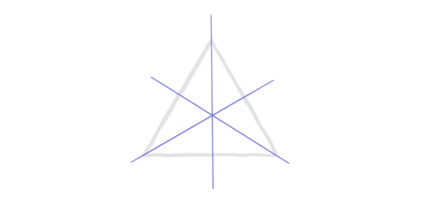
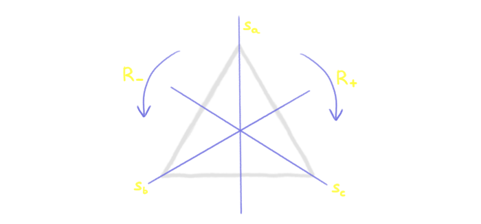
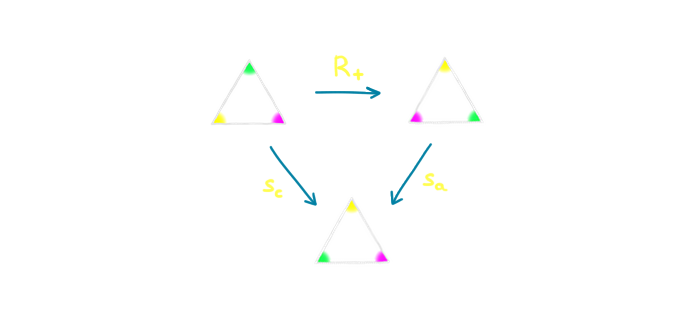
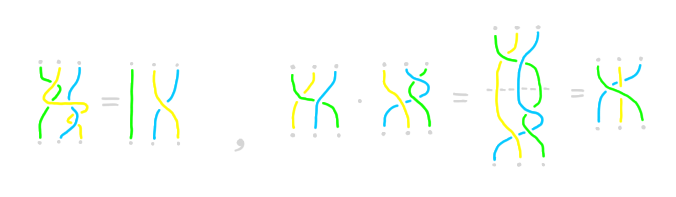
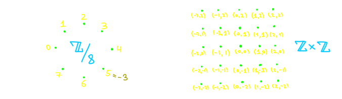

Данная страница содержит конспект курса "Алгебра и топология" проведённого в летнем физ-мат лагере "Δelta".
Многие слышали о том, что с точки зрения тополога кружка и бублик это одно и то же.
Многие так же догадываются, что бублик и шар это НЕ одно и то же.
Для того чтобы понять что это значит и почему это так, требуется ответить на два вопроса:
Что означает, что два объекта одинаковые?
Если два объекта не одинаковые, как можно это доказать?
Для ответа на первый вопрос нам потребует понять что такое топология, а для второго — что такое алгебра и как
она применяется в топологии.
Курс организован следующим образом:
На первой трёхдневке мы поговорим о симметриях и группах — основных алгебраических структурах, которые нам
потребуются.
На второй трёхдневке мы обсудим понятие топологических пространств и научимся отличать их друг от друга с помощью
алгебры.
На последней трёхдневке мы обсудим более сложные конструкции, такие как накрытия и расслоения и узнаем, почему в
обычной сфере больше дырок чем кажется на первый взгляд.
Лекция 1: Симметрии и группы
В группах скрыта вселенной тайна,
Повторы многих миров в едином танце.
Симметрия жизни, порядок и хаос,
Вечный баланс, что ведёт нас к космосу.
Философский стих от ChatGPT
Основное определение этой лекции — группа. Прежде, чем давать его формально, рассмотрим следующий пример:
Пусть дан равносторонний треугольник на плоскости. Мы понимаем, что он достаточно симметричен, например у него
есть три оси симметрии.
Что означает, что фигура имеет ось симметрии?
Это означает, что если отразить её относительно этой оси, то фигура перейдёт сама в себя.
Иными словами, у нас есть преобразование треугольника, которое переводит этот треугольник сам в себя.

Какие ещё преобразования с похожими свойствами мы можем найти?
Немного подумав, можно найти ещё два: поворот треугольника на 120 градусов по и против часовой стрелки.
Иначе говоря, мы говорим, что "треугольник симметричен относительно поворотов на соответствующие углы".
Есть ещё одно, особое преобразование, заключающееся в том, чтобы ничего не делать.
Мы будем обозначать его \(\id\).
Несмотря на то, что оно очень тривиально, оно играет существенную роль.
В частости, любая фигура имеет такую тривиальную симметрию.
Итого, мы получили шесть преобразований: три симметрии, два поворота и \(\id\).
Обозначим наши преобразования через \(s_a, s_b, s_c, R_+, R_-\),
где \(s_a, s_b, s_c \) — отражения относительно соответствующих осей,
\(R_+, R_-\) — повороты на 120 градусов по и против часовой стрелки соответственно.

Каждое из этих действий как-то двигает треугольник (поворачивает, переворачивает или вообще ничего не делает),
а значит, после того как применил одно действие, можно сделать ещё одно.
Например, можно дважды повернуть по часовой стрелке и получить поворот на 240 градусов!
Заметим, что поворот треугольника на 240 градусов по часовой стрелке это то же самое,
что и поворот против часовой на 120 градусов. Поэтому мы можем записать это в виде следующего выражения:
\[R_+ \cdot R_+ = R_-,\]
где '\(\cdot\)' обозначает композицию действий.
Аналогичную конструкцию мы можем сделать для любых двух симметрий.

В частности, если сделать одну и ту же симметрию относительно данной оси два раза подряд,
результат будет "ничего не делание", т.е. \(\id\).
Иными словами,
\[s_a \cdot s_a = \id. \]
Задача 1. Постройте табличку 6x6 для всех возможных пар последовательных действий и обнаружьте,
что каждый раз получается одно из шести известных нам действий.
Задача 2. Докажите, что существует всего шесть симметрий треугольника.
Указание: симметричное преобразование однозначно задаётся перестановкой вершин. Задача 3. Постройте такие фигуры на плоскости, для которых существует ровно четыре симметрии (включая
\(\id\)) и
а) не все симметрии являются поворотами на плоскости;
b) все симметрии являются поворотами на плоскости.
Если вы построили табличку, вы можете заметить следующие очевидных свойства наших симметрий:
Для любых трёх симметрий \(x, y, z\) не важно как расставить скобки в композиции:
\[ (x \cdot y) \cdot z = x \cdot (y \cdot z). \]
Ничего не делание (\(\id\)) никак не изменяет симметрии при композиции, т.е. для любой симметрии \(x\) верно
\[ \id \cdot x = x \cdot \id = x. \]
Для любого действия существует "отменяющее его действие", т.е. для любого \(x\) существует такой \(y\), что
\[ x \cdot y = y \cdot x = \id. \]
Заметим, что не обязательно \(y\) должен отличаться от \(x\),
например симметрия к \(s_A\) обратная ей будет она же.
Заметим, что множество всех симметрий любой фигуры на плоскости удовлетворяет тем же свойствам. Мало того, похожим
свойствам удовлетворяют и другие множества. Пример:
Пусть \(\mZ = \{..., -3, -2, -1, 0, 1, 2, 3, ...\}\) — множество целых чисел. Тогда операция сложения обладает
аналогичными свойствами!
Для любых трёх чисел \(x, y, z\) не важно как расставить скобки:
\[ (x + y) + z = x + (y + z). \]
Прибавление нуля никак не изменяет числа при сложении, т.е. для любого числа \(x\) верно
\[ 0 + x = x + 0 = x. \]
Для любого числа существует "отменяющее его относительно сложения", т.е. для любого \(x\) существует такой \(y\), что
\[ x + y = y + x = 0. \]
Упражнение. Проверьте аналогичное свойство для ненулевых рациональных чисел и операции умножения.
Что будет выступать здесь в роли \(\id\)?
Рассмотрим ещё один пример: косички из трёх нитей. Две косички будем считать одинаковыми, если можно,
удерживая концы нитей на месте, превратить одну косичку в другую (не разрезав нити). Для любых двух косичек мы
можем приставить вторую к концу первой. Это задаёт бинарную операцию.

Задача 4. Проверьте наши свойства для косичек. Что будет выступать здесь в роли \(\id\) и "обратной" косы?
Что, если ниток не три, а \(N\)?
Итак, мы увидели уже три разных случая, когда на множестве некоторых объектов возникает операция с похожими свойствами.
Пришло время абстрагироваться и ввести формальное определение той структуры, которая описывает все изученные нами примеры.
Определение: Множество \(G\) называется группой, если на нём введена бинарная операция \(\cdot\), такая,
что выполняются следующие свойства:
Ассоциативность: для любых элементов \(x, y, z\) из \(G\) верно
\[ (x \cdot y) \cdot z = x \cdot (y \cdot z). \]
Существование нейтрального элемента:
Существует элемент \(e\) такой, что для любого элемента \(x\) из \(G\) верно
\[ e \cdot x = x \cdot e = x. \]
Существование обратных элементов: Для любого \(x\) из \(G\) существует такой \(y\) из \(G\), что
\[ x \cdot y = y \cdot x = e. \]
Обычно обратный элемент к \(x\) обозначают \(x\inv\), а вместо \(x\cdot y\) пишут просто \(xy\).
Все примеры, которые мы рассматривали раньше были группами. Напишем их ещё раз, вместе с традиционными обозначениями:
\(D_3\): группа симметрий треугольника.
Состоит из шести элементов — \(\id\), двух поворотов и трёх осевых симметрий.
Операция — композиция действий.
Нейтральный элемент — \(\id\).
Обратный элемент к поворотам — поворот в противоположную сторону,
обратный элемент к осевой симметрии — эта же осевая симметрия
\(\langle \mZ, +\rangle\) или просто \(\mZ\): группа целых чисел относительно сложения.
Состоит из бесконечного числа элементов — целых чисел.
Операция — сложение.
Нейтральный элемент — 0.
Обратный элемент к числу — минус это число.
\(B_N\) или \(\text{Br}(N) \): группа кос.
Состоит из всех косичек с \(N\) нитями;
Операция — добавление одной косички в конец другой.
Нейтральный и обратные элементы — задача.
Приведём ещё несколько примеров групп.
1, 0 или \(*\): тривиальная группа.
Состоит из одного элемента \(*\).
Операция — \(* \cdot * = *\).
Нейтральный элемент — \(*\).
Обратный элемент к \(*\) — \(*\).
\(\mZ/n\mZ\) или \( \mZ/n \): группа остатков по модулю \(n\).
Состоит из \(n\) элементов — \(0, 1, ..., n-1\).
Операция — сложение по модулю \(n\) (например, при \(n = 4, 3 + 2 = 1\)).
Нейтральный элемент — 0.
Обратный элемент к числу \(k\) это \(n - k\).
\(\mZ\times\mZ\): группа пар целых чисел.
Состоит из всех элементов вида \((m, n)\), где \(m\) и \(n\) — целые числа.
Операция — покоординатное сложение, т.е. \((m_1, n_1) + (m_2, n_2) = (m_1 + m_2, n_1 + n_2)\).
Нейтральный элемент — \((0,0)\).
Обратный элемент к паре \((m, n)\) это \((-m, -n)\).

\(\text{Fr}_2\) или \(\mZ*\mZ\): свободная группа ранга 2.
Состоит из всех слов конечной длины (включая нулевую) из знаков \(a, a\inv, b, b\inv\),
таких, в них нет что нет подстрок вида \(aa\inv\), \(bb\inv\), \(a\inv a\), \(b\inv b\).
Операция — конкатенация слов с последующей редукцией подстрок указанных выше. Например
\[ aba\inv \cdot ab\inv a = aba\inv ab\inv a = abb\inv a = aa \]
Нейтральный элемент — пустое слово.
Задача 5. Найдите как выглядят обратные элементы и докажите,
что предыдущий пример действительно является группой